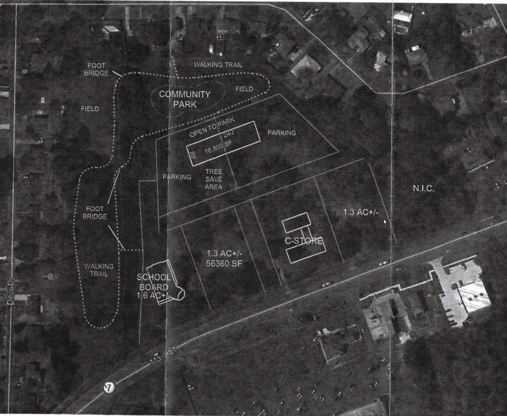

Welcome to Green Trussville
This is Green Trussville, a site to keep everyone informed about the property on Highway 11 across from Winn Dixie in Trussville, AL. A developer has asked for the property to be rezoned from residential to C2 commercial.
This issue is still very much up in the air and we need your support and involvement now more than ever.
The New Conceptual Design Plans

This video shows the beautiful wooded area between Birch Street and Dew Drive that will be destroyed if the rezoning happens.
Across the highway you can see the Winn Dixie plaza.
Leave the Green, Trussville!
The development plan for the property across from Winn Dixie includes a gas/service station, and other businesses yet to be determined. We do NOT believe this proposal to be in the best interest of our city.
There was a meeting of the Trussville Planning and Zoning Board on March 11 at which the board voted to recommend to our City Council that they NOT approve the previous zoning change request.
Follow the link “Trussville City Council” to access your city council members' email addresses. Please let them know how you feel about the development and rezoning requests. A separate email to each of them will have the most impact.
Contact Us at LeaveTheGreenTrussville@gmail.com


{kind=link}
{kind=link}